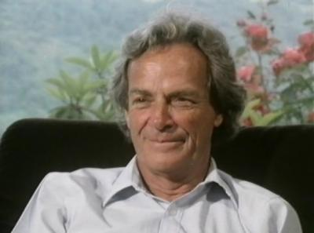
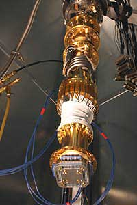
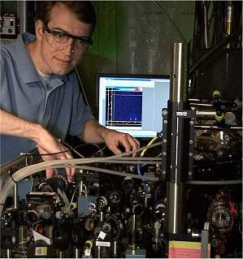

História e Evolução(){
i++
História e Evolução dos Computadores Quânticos

Richard Feynman, Nobel de Física de 1965
A teoria do Computador Quântico dentro da ciência da computação existia desde a época de Albert Einstein (anos 50), mas somente nos anos 80 foram feitas as primeiras tentativas de se construir algo semelhante ao magnífico computador quântico. Em 1981, o físico Richard Feynman, Nobel de Física de 1965, enquanto estudava física quântica, criou a primeira proposta para o uso das propriedades quânticas para processar programas de computador, que seria a primeira ideia sobre um computador quântico. Suas ideias revolucionárias foram apresentadas em uma conferência de física no Instituto de Tecnologia de Massachusetts, em 1982. Feynman apontou que os sistemas clássicos não seriam capazes de modelar eficientemente os sistemas quânticos e que estes só poderiam ser modelados utilizando outro sistema quântico.
David Deutsch foi o primeiro a levantar o questionamento sobre a capacidade de processamento dos computadores quânticos em relação aos clássicos, em 1985, e descreveu matematicamente o primeiro computador quântico universal (máquina de Turing Quântica). Foi ele também o primeiro a publicar um algoritmo quântico, o Problema de Dois Bits de Deutsch, em 1989. Este algoritmo poderia responder se uma função é balanceada ou constante em apenas um passo, enquanto em computação clássica precisa de no mínimo dois. Até 1990, computação quântica era apenas uma curiosidade.
Isto só mudou quando, em 1994, o professor de matemática aplicada Peter Shor criou o primeiro programa puramente quântico (só poderia ser executado em computadores quânticos). O Algoritmo de Shor permite a um computador quântico fatorar grandes números em segundos, enquanto estes mesmos cálculos podem levar meses para serem resolvidos em um computador eletrônico. A fatoração de números grandes é a base de alguns sistemas de criptografia, como, o RSA (em homenagem a Ronald Rivest, Adi Shamir e Leonard Adelman, os primeiros a propor o método em 1978). Após o desenvolvimento deste algoritmo, vários setores da comunidade científica passaram a se interessar pela computação quântica.
A partir desse interesse, surgiram outros algoritmos quânticos, tais como o Speedup, algoritmo criado em 1996 pelo matemático Lov Grover da Bell Labs para pesquisa de bases de dados , o algoritmo para logaritmos discretos de Shor, outro de fatoração de Jozsa em 1997, entre outros. Enquanto o número de algoritmos quânticos crescia, os esforços no sentido de produzir um hardware quântico também aumentavam. Técnicas como ressonância nuclear magnética (NMR) e armadilha de íons são usadas com sucesso no desenvolvimento de sistemas com 3 e 5 qubits.
Pesquisadores de Los Alamos e do Instituto de Tecnologia de Massachusetts conseguiram controlar, em 1998, um único qubit por três giros nucleares em cada molécula de uma solução com moléculas de alanina (Um aminoácido usado para analisar a deterioração do estado quântico) ou tricloroetileno (Um hidrocarboneto clorado utilizado para correção de erro quântico). Espalhando-se o qubit, tornou mais difícil de corromper, permitindo que os pesquisadores usassem o emaranhamento para estudar as interações entre os estados como um método indireto para a análise da informação quântica. Um ano depois os primeiros protótipos de um computador quântico real foram desenvolvidos.
Em março de 2000, cientistas da Los Alamos National Laboratory anunciaram o desenvolvimento de um computador quântico de 7 qubits dentro de uma única gota de líquido. O computador quântico usava ressonância magnética nuclear (RMN) para manipular partículas dentro do núcleo atômico das moléculas de ácido trans-crotônico, um simples fluido consistindo de moléculas feitas de seis átomos de hidrogênio e quatro átomos de carbono. A RMN é usada para aplicar pulsos eletromagnéticos, o que força as partículas a se alinharem. Estas partículas em posições paralelas ou contrárias ao campo magnético permitem que o computador quântico imite a codificação de informações em bits de computadores digitais.
Pesquisadores da IBM Almaden Research Center desenvolveram o que eles alegam ser o mais avançado computador quântico até aquela data, em agosto de 2000. O computador quântico de 5 qubits foi projetado para permitir que os núcleos de cinco átomos de flúor interajam uns com os outros, sejam programados por pulsos de radiofrequência e detectados por instrumentos de RMN semelhantes aos usados em hospitais. Liderada pelo Dr. Isaac Chuang, a equipe da IBM foi capaz de resolver em uma única etapa um problema matemático que computadores convencionais levariam repetidos ciclos. O problema, chamado order-finding, envolve encontrar o período de uma função particular, um aspecto típico de muitos problemas matemáticos envolvidos em criptografia.
Cientistas da IBM e da Universidade de Stanford demonstraram com sucesso o Algoritmo de Shor em um computador quântico em 2001. Eles usaram um computador de 7 qubits para encontrar os fatores de 15. O computador deduziu corretamente os fatores primos.

Computador quântico de 16 qubits
da D-Wave, construído em 2007
Em 2005, o Instituto de Óptica Quântica e Informação Quântica na Universidade de Innsbruck anunciou que os cientistas haviam criado o primeiro qubyte ou uma série de oito qubits, utilizando armadilhas de íons.
No ano de 2006, cientistas em Waterloo e Massachusetts desenvolveram métodos para o controle em um sistema quântico de 12 qubits, e perceberam que o controle quântico se torna mais complexo quando lidam com mais qubits.
Em 2007, a companhia startup canadense D-Wave afirmou ter construído o primeiro processador quântico da história da humanidade, batizado de Orion. O Orion é um processador híbrido de 16 qubits que também poderia processar bits tradicionais. O computador resolveu um sudoku e problemas de correspondência de outros padrões.

Primeiro processador quântico programável
universal, construído em 2009
Pesquisadores descobriram que os átomos de carbono que formam o diamante podem servir como "qubits naturais", em 2008. Um ano depois, a Google se juntou à D-Wave Systems para coordenar pesquisas na computação quântica, voltadas à busca de imagens. Também é lançado o primeiro processador quântico programável. Em 2011, pesquisadores conseguiram transferir um conjunto complexo de informações utilizando teletransporte quântico sem perda de informações. No mesmo ano, físicos brasileiros mediram a chamada discórdia quântica, ligada ao entrelaçamento, que pode ser útil na troca de informações em um computador quântico.
Recentemente, um computador quântico da D-Wave foi o primeiro a ser disponibilizado no mercado. Leia mais sobre este computador na seção de Notícias da printf.
Referências:
FFESP
fisica.net
Guia da Carreira
Numerofilia
}